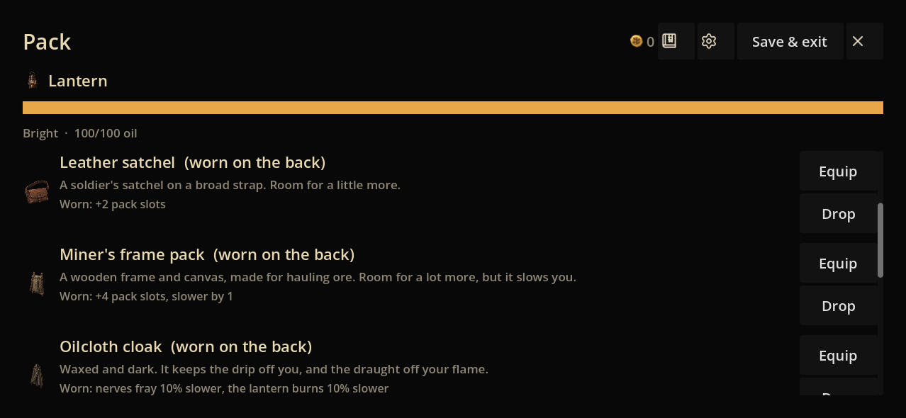

The field kit and its consequences
Eight new item illustrations and eleven distinct effect symbols. These are connected to the current inventory resources and hero cards.
Each item: 128 px source export, direct-source 64 px compact export, then 40 px display.
Each symbol: enlarged 96 px, native 32 px and actual 14 px card size. Round corner mark for boons; downward triangle for banes. Shape carries the specific identity.
Actual game controls

Godot 4.7.2 Mobile renderer, isolated Pack/PartyCard fixtures. Phone-size Windows renders; physical iPhone readability remains to be checked.